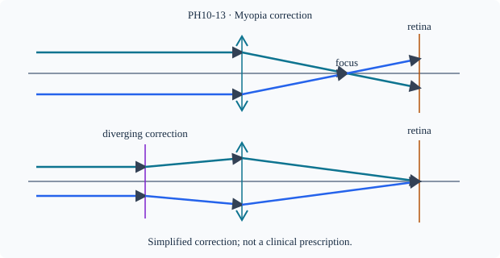

Prerequisite bridge
PH10-12
Before starting, identify the reference frame, directed rays, units and applicable geometric assumptions. Unbound prerequisites remain provisional.
Connected textbook foundation (preserved from PR #5)
14. Myopia and hypermetropia are focusing problems
In myopia the eye's optical system brings distant rays to a focus in front of the retina under relaxed viewing conditions. A diverging corrective lens reduces convergence so that the total optical system can bring distant images onto the retina. In hypermetropia, nearby objects are difficult to focus; a converging corrective lens can help by reducing the accommodation needed for nearby objects. Presbyopia, related to reduced accommodation with age, is conceptually distinct from assuming every blur is caused by eye length alone.
A corrective lens must be selected from the stated focal-position defect. Memorizing “minus for myopia, plus for hypermetropia” is an outcome; explaining why the correction works is the scientific demand.
Boundary check: A student says an eye can always accommodate arbitrarily close objects by increasing curvature without limit. Explain why the physical accommodation range makes the claim false.
Build and check the model
Myopia: distant rays focus in front of retina when relaxed, finite far point; a diverging correction makes distant rays appear to come from far point. Hypermetropia: near-object focusing is inadequate for a given accommodation, and a converging correction can reduce divergence reaching eye. For a thin corrective lens near eye, myopic far point R metres gives f≈−R and P≈−1/R. If hyperopic near point N>desired reading distance d, set virtual image at −N for object −d: P≈1/d−1/N. Real prescriptions require professional measurement and lens-eye geometry.
Worked anchor
Far point 0.5 m gives ideal P=−2 D. Near point 0.50 m, desired d=0.25 m gives P=4−2=+2 D. These are school models, not clinical prescriptions.
Condition and limiting check
Presbyopia involves accommodation loss with age, not simply identical to hypermetropia; astigmatism requires direction-dependent power and lies outside this spherical model.
Misconception repair
Do not choose correction sign by memorizing 'near' or 'far' alone; analyze whether incoming rays need extra divergence or convergence.
Reasoning diagram

Self-check before transfer
Ideal myopic eye far point 1.25 m. Predict near-eye correction for distance.
Check the reasoning
P≈−1/1.25=−0.8 D. Actual prescription needs assessment.
Source and figure status
Curriculum pointer CBSE10; candidate scope only. Preserved chapter manuscript. Original subtopic-specific figure attached. Scientific figure and teaching-sufficiency reviews remain HOLD.